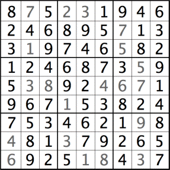
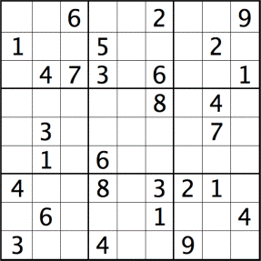

u2
Solved in 173 steps.
Nothing special. Default settings only.
Only puzzles #1 and #7 require Heuristic 1+ to open up to allow chaining up to lengths 4 and 5, respectively.
[See list of heuristics here.]
For the record:
File: u1
Solved in 157 steps. 63 steps with the default settings. Then bumping the 1+ setting to 4 cracks the puzzle wide open. |
|
|
File: u2
Solved in 173 steps. Nothing special. Default settings only. |
File: u3
Solved in 163 steps. Nothing special. Default settings only. |
File: u4
Solved in 156 steps. Nothing special. Default settings only. |

|
File: u5
Solved in 156 steps. Nothing special. Default settings only. |
File: u6
Solved in 167 steps. Nothing special. Default settings only. |
File: u7
Solved in 151 steps. 99 steps with default settings. Bump 1+ setting to 5 to crack the puzzle. |
 |
File: u8
Solved in 183 steps. Nothing special. Default settings only. |
|  |
File: u9
Solved in 174 steps. Nothing special. Default settings only. |
File: u10
Solved in 172 steps. Nothing special. Default settings only. |
File: u11
Solved in 145 steps. Nothing special. Default settings only. |